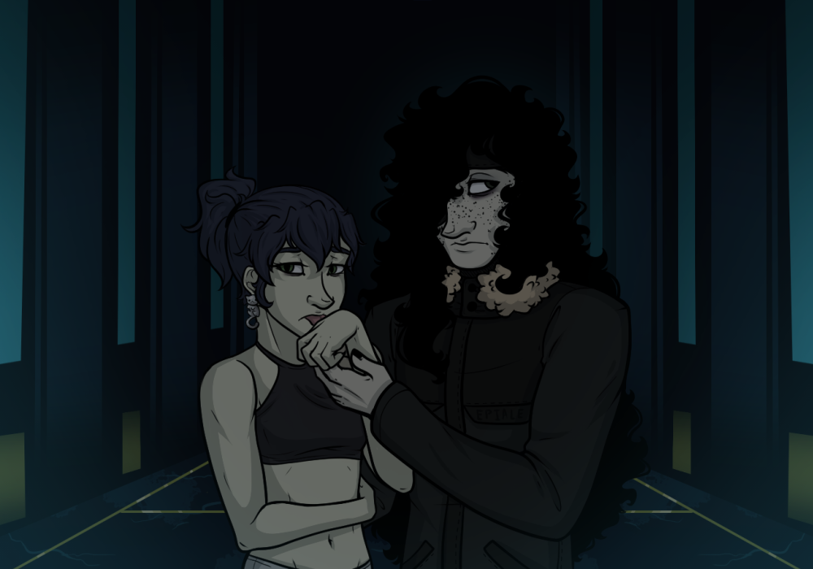

Mal thought idly that he might be working too much, as he tried to wipe some of the blood off his face. All he managed to do was make it worse, spread the slightly tacky substance further across pale freckled skin, hands soaked much more thoroughly. Honestly most of him was pretty coated in a nauseating miasma of bodily fluids, the very air reeking of metal and meat. His hair was sticking to his skin in places, long, messy black waves clumped in chunks, and he could even feel where something had gotten under the leather patch covering his missing right eye.
Ugh.
Mal typically liked his job, loved working. He got to do things his own way without someone breathing down his neck about it, the job paid well, and the actual surgical work was interesting. It was all very illegal, sure, but they’d carved out a comfortable network to work within. It normally wasn’t this bad, or this messy, but the new guy they’d brought in somehow nicked a major artery, and, well, it had been a panicked race after that to get everything they needed out, viable and ready for transport.
Sloppy. Even working with an idiot he would normally handle a mistake like that better. Mal was good at his job, commanded the scalpel with deft ease, knew the human body backwards and forwards, inside and out, had been doing this for years and never lost an organ that started healthy. Stifling the bleed should have been easy, but lethargy and complacency had been gnawing at the back of his brain, and he’d been slower to react than he should have been.
He also should have noticed the other glaring issue sooner.
The new guy walked over to the last cooler as the few others who’d been working with them filed out of the room, reached to pick it up, and was stopped by a vice grip on his arm. The hand felt vile, tacky red layered over unyielding fingers. Mal didn’t let up when the man winced, or when he turned to flash a nervous grin over his shoulder.
“Uh, sorry about that. I know I messed up, but I’ll get this delivered quick, and-“
“And where is that going?”
The man blinked, offered a nervous laugh, and tried to pull his arm out of Mal’s grip, failing miserably. It was hard to see Mal’s face in the scarce light the room offered, their back turned to the only real light source, an ancient surgical lamp that had clearly gone too long without being wiped down. Even the light of the hall faded out as the door slipped shut, leaving the two alone.
“I’ll need to double check before I get to the car, obviously,”the man offered,”You know that was some technique you have, never seen a surgeon work without gloves-“
Mal sighed, took advantage of his own height to twist the man's arm up painfully over his head.
“OW- Hey! Stop!-“
Mal cut him off, voice flat,“Look, I’ve been working for days now. I really don’t have the patience for this. Just tell me what you’re actually doing here and-“
In a flash, a blink of the eye, the man had moved his free hand to his waistband, pulled a gun from its holster, leveled it at Mal’s face, and pulled the trigger.
An ear-splitting bang ripped through the room.
The man laughed as adrenaline spiked.
“Ha! Boss said you’d be hard to take out, but- but you…“
He trailed off. Stopped. Squinted, and shook his head against the ringing in his ears. The old surgical lamp left Mal a shadow in his gaze, a silhouette back-lit in dingy orange. The shot should have landed, couldn’t possibly have missed, but, no, something was wrong. The grip on his arm hadn’t let up at all. Mal wasn’t falling to the ground, and the gap where his face had been was- was-
Moving.
Mal’s dull green eye blinked down at him.
Slow.
Bored.
Fran lay nestled on an overplush couch, leg stretched over the back. One of her tiger ears flicked, listening to the sounds of her basement roommate pacing below her while she read a flier that had come through their mailbox.
Her life up to this point had been one of misery. Having summoned, and then made a pact with an elder god, the last 10 or so years (Fran had lost count) involved converting others to her cult, and into literal monsters. She herself had been a host for the Elder God to possess at will, thus forcing her to stay on a private island the cult called its home without internet access or access to people other than fanatics, her fellow leaders, and people that would soon be fanatics or dead. She wasn’t quite sure what happened to the others on the island after she made her escape with Mal, but the irresistible pull to remain had disappeared from her mind completely. As far as Fran could tell, she was free now, free and still had the ability to shift into her eldritch form, a
Cat of Saturn
; an otherworldly creature resembling a tiger whose stripes and blood resembled that of the cosmos primarily living in Saturn's Dreamlands, whatever that meant. Fran never bothered to learn the ins and outs of the worlds the elder god spoke of, not after she saw her ex-boyfriend go mad with the knowledge of it.One of the perks of such mobile careers is that there was no real need to plan much before packing, and it didn’t take long to start on exactly that. Within a few days they’d managed to acquire the ghost hunting equipment Fran wanted, and Mal had coldly informed his colleagues they’d need to make do without him for a while. Fran, meanwhile, had temporarily closed her art commissions, working overtime to finish the few pieces she had left. Mal sent off a final text to one of the few he actually trusted as they both wrapped up the last of their trip preparations.
“Are you sure you want to wear that?” Mal asked dryly, staring at Fran’s attire “You’ll freeze, and also stand out.” She was dressed in a black halter and shorts, the complete opposite of his fur lined coat and snow boots.
“I don’t feel cold, well… I feel it but ever since I changed I haven’t needed to dress for the weather. Space thing I’m guessing.” Fran shrugged, giving a small smile. “I’d feel more comfortable being able to transform at a moment's notice and not rip through whatever I was wearing. Not that you would mind…”
“No, I would… It would be impractical to have to pack extra then replace the items when we got back.”
“No I meant that…” Fran sighed “Nevermind.”
“What?”
“It’s nothing. Love you, babe.” Fran pecked his cheek then nipped at his ear, wrinkling her nose as his greasy hair brushed against her.
The slime persisted no matter what grooming Mal did, a result from being an Eldritch sludge forced into a human form, Fran assumed. Her cult had taught that every human had the potential to embrace their Eldritch other, their true, more powerful self. They lured people in with dreams and groomed them to be mentally prepared for their body and mind to be warped beyond comprehension. It was an ordeal very few survived, and even less retained their original willpower. She ran her fingers through Mal’s hair, perhaps it was his stubborn practicality that had saved him, and ultimately helped her to escape her own thrall.
Or it all could have been dumb luck. Either way she wasn’t going to complain.
Mal leaned into the contact as he pulled out his phone.
“I was thinking we could fly out to the general area, but looking around I think we’d need to hire someone local to get us further. There isn’t really anything online about this place...”
The sense that this was a scam came back as he closed out excess tabs of searches he’d done on the location listed in the flier, but it came weaker than before. He’d done a lot of traveling to weird locations, but the sheer strangeness of this place was new. He’d never heard of Thraelos, couldn’t seem to find it anywhere on a proper map. It wasn’t that he didn’t know how to get there, he did, somehow reading the flier made it perfectly clear where they were going, but that understanding wasn’t in the form of a clear address or any kind of real substantial directions.
He paused for a moment, tried to recall the flier in his mind, and failed miserably.
“Was there something, uh, eldritch about that flier?”
Fran shrugged, and handed Mal the flier, looking over his shoulder to investigate it herself.
Mal frowned,”Trying to figure out how I got directions out of this thing makes my head hurt.”
Fran squinted at it. She hadn’t really paid much attention to the where before, but she could see what he was talking about.
“Yeah, looks like magic bullshit to me.”
“...Is that bad?”
Fran shrugged,”Not necessarily.” She peered at the paper again, looking for any hidden symbols or glyphs “It doesn't have any of the marks that the portal on the island had, it could just be a hidden place on this world.” She smirked and took Mal’s hand “Don't worry, I'll protect you from any bullshit in there.”
The trip had been about as vague, and confusing as the directions had been, but they’d made it into town without issue. It was unknown if they were in their world or if at some point in their journey they had slipped through the veil between their world and another. Dragons were definitely not normal, but neither were cats from space or people turning into sludge. Perhaps this was just an unknown village that happened to slip through the sights of normality. What was known is that the locals were sick of people asking about the haunted house on top of the mountain, cutting the pair off as soon as they began to ask questions.
“We might have our work cut out for us finding a ride,” Mal said as he returned from being blown off by yet another local, ”Nobody’s up for talking.”
“Fuck it, we could just walk up there. It’s not like wildlife is a threat.” Fran suggested, staring intensely at a small fluffy dragon she was suppressing the urge to chase down.
Mal followed her gaze, resisted the urge to try to pet the less human residents walking by, then turned towards the great snowy expanse beyond the town. It looked like a rough hike, but they should be able to make it. Fran couldn’t have been less bothered by the cold, and Mal wasn’t entirely put off trying. It would be a deeply annoying trek, deadly to an average person, but doable for two monsters.
He shrugged, ”Sounds better than trying to force someone here to work with us.”
She took his hand in her own, started leading them out of the crowded street towards the mountain.
“Let’s just go. Can’t be any worse than getting yelled at by annoyed dragons.”
The trip was objectively significantly worse than dealing with the people in town had been. It had occurred to Mal about halfway through their climb that he probably could have hired a pilot or at a minimum some kind of vehicle to get them there a bit easier, but it was more than a bit too late to change course.
The wind and cold not being deadly didn’t make the weather less annoying. Fran had a much easier time, Cat of Saturn form more suited to moving through rough terrain, fur negating the worst of the biting winds, though she kept shaking off snow that settled in the space her wrist and calf would have been if they were not missing. Mal, largely stuck maintaining his human form, was slower to press on. Being able to latch onto rocks with tentacles helped, sure, but his own eldritch cold resistance didn’t seem to be as effective, and taking on his more amorphous form he found it slowed by the chill.
By the time the terminal platform’s edge was hinting at visibility through the wind blown snow Fran had had to just grab hold of, and bodily drag Mal along through a few rougher stretches of mountain, and they’d spent one miserable night camping out there, but they’d made it in one piece, whole and hale.
They had largely assumed that there wouldn’t be too large a crowd after seeing the storm. As much as the locals had clearly been exasperated by requests for rides or directions, they’d assumed most people would have seen the utter lack of comfortable transportation through an objectively miserable storm and given up. Unfortunately that didn’t seem to be the case.
As the looming mass of the terminal drew ever closer, and the courtyard before it came into view, more people did as well. The established base camp was swarming with those who’d answered the call, checking gear, setting up tents, trying to warm up after fighting through the frost.
Ugh.
The crowd did keep in line with what they’d seen in town, dragons and other decidedly inhuman beasts moving through the human population without so much as a sideways glance. At least they shouldn’t stand out too badly.
As they stepped up finally out of the snow and onto the terminal landing proper, a slim, flighty figure in the crowd perked up, waving them over. Fran thought he looked like a character she would be commissioned to draw with some sort of demon or monster.
“Welcome! Good to see we’ve got more help- Though, God, did you walk all the way here dressed like that? Are you okay-”
“We’re fine,” Fran cut him off, simply brushing away the snow that had clung to her, ”We’re here for the job posting thing, need to talk to some guy called, uh-”
“Cain,” the man held out a hand, flashing a trained smile, ”I’m Cain Salvatori, the one who sent out the ads.”
Mal was the one to reach out to accept the handshake, and Cain did an impressive job of not visibly grimacing at the contact.
“I’m Mal Morrigan, here with Frances Davis. We got your flier about,” he waved a hand dismissively, ”ghost hunting, cleansing-”
If Cain was annoyed by his demeanor he didn’t show it, ”Yes, the spirits trapped in the terminal. I was just about to do a bit of a group announcement to share all the information we have so far. Please settle in, and get anything you need ready to go.”
Fran seemed almost giddy about the debriefing. “I’ve brought all the traditional stuff, salt, candles, emf reader, Jea-”
“Yeah… see about that…” Cain cleared his throat, stepped back, motioned to gain the attention of the group at large.
“Uh, now that it seems like everyone who’s going to show up is here, let’s make sure everyone’s up to speed-”
Cain explained his first encounter to the group at large, how his brief time in the building resulted in nothing and everything all at once, and the unknowable entity within. Mal shot Fran a sympathetic glance as he went through the various ways traditional ghost hunting techniques had failed. Just because Mal didn’t believe in ghosts didn’t mean he was thrilled to see Fran’s enthusiastic ghost hunting equipment gathering rendered mostly useless.
Fran wasn’t deterred. She still had a point to prove, and just because this human twig couldn’t figure out how to banish the spirits lurking in the looming building didn’t mean she couldn’t work it out. After all, it could hardly be worse than the King in Yellow had been, than the things she’d already faced before. Plus if it was a hoax, it was always nice to see Mal get away from work for a short while.
She scanned over the crowd, and found most seemed just as unimpressed. A few seemed nervous, glancing wide-eyed at the hulking terminal before them, pulling coats around themselves tighter. She wondered why so many were transformed, as it both stood out and potentially revealed their supernatural powers. It didn’t really matter. She wasn’t planning on sticking close to any of them anyways.
Mal caught her eye, reached over to brush new snowfall out of her hair.
“What do you think?”
She shrugged.
“I think we can do a better job than that guy did.”
He cracked a smile,”Of course, ”he trailed off, slipped back into his usual unimpressed deadpan, lowered his voice to a conspiratorial whisper,”Better than most of these weirdos too.”
Fran nodded “I'd watch out for that one though.” She pointed at a man in a flashy red outfit whose head was a geometric yellow shape “looks like they are a
Hound of Tindalos
.”Fran looked around as the group entered the lobby, her pupils widening to take in more light. Mal pressed his hand lightly against her lower back, a protective gesture.
The room was grand in the truest sense of the world, vast in a way few enclosed spaces could ever hope to be. Footsteps echoed with a hollow groan, sound distorted by the sheer distance it had to travel, noise alone enough to pull at an innate understanding of just how much space they were facing. The ceiling disappeared into a great ocean of shadow, too dark to penetrate, and what little they could make out of the rest of the room was only hinted at by the faintest spots of dull emergency lighting along the walls.
The doors slammed behind them. Blue light spun wildly in the room causing Fran to squint and turn away as her cat pupils contracted. Mal held her closer to his side, tensing for any danger. A great vicious gale battered the group, and he braced against it, squinting to follow the source of the sudden chaos to a dark, ethereal shape forming in the center of the great room.
The very air hung around them like a great unseen weight, an unnerving pressure that seemed to sink beneath the skin as the dark figure formed a pair of piercing eyes, holding the same cyan glow that lit up the rest of the terminal. It hung in place, stared, then finally spoke.
“The powers that be finally deigned to do something about us, huh?” the voice started, confident, direct, but warbly, distorted somehow,”I should've figured when that idiot–,”the creature gestured at Cain, near the back of the group,”–came in here whimpering about being here to help. Let me guess, they told you to get rid of us by any means necessary? That they would pay a king's ransom for your service. Hmph, typical. Now you're trapped in here with me. I'll tell you now: in the Bifrost Terminal, I am creator, judge, and jury. Nothing happens without me knowing-”
Mal turned to look over his shoulder as the figure continued to talk, looked back at the man who’d invited them all here in the first place. Mal had no particular talent for reading people, in fact he found reading people painfully difficult, but he’d recognize the terrified recognition in the man’s face anywhere. It was the same look more than one hindrance had leveled his way over the years.
Cain knew something he wasn’t sharing, and Mal hardly paid attention to the rest of the shadow’s speech as he tried to piece together what it might be.
Fran kept a better eye on the actual spirit at hand as it continued to talk, eyes finally adjusting to the light.
“You are all still in one piece because I decided you should be,”the voice practically purred, amused,”So, explore the terminal, ask questions. You are all here for a job, aren’t you? Well then, allow me to assign you your work task: figure out how to free the souls trapped in this godforsaken facility. And as incentive, the first among you to succeed in freeing all of the spirits here shall be allowed to leave The Bifrost Terminal. As for the rest of you… If you don't finish first? If you slack off or annoy me and your fellows instead of putting your nose to the grindstone? Well... I'll leave that to your imagination."
It was… certainly an evil speech. She’d heard similar threats before, Gods and eldritch powers darkly amused as they lay out some vague rules or task to complete. It was all a bit heavy handed.
It was also a great show that this place was genuinely haunted.
The wind picked up again, just as great as when it first arrived, and in a final flash of cyan, the entity and all the commotion it had brought faded into the quiet dark of the terminal.
“Look, that definitely was some supernatural ghost bullshit,”Fran grinned pointing to the space the entity just occupied.
“I don't know, babe.” Mal shrugged,“Special effects are really impressive now. Remember when we went to that theme park? And did you hear that weird distortion when it talked? Sounded like pre-recorded audio, probably run through speakers in the walls.”
Fran flushed, crossing her arms and looking away. “Once set up, the ghosts would be cheaper.” The people around them were beginning to spread, presumably to begin the job that was advertised. Not her, she was done taking orders from mysterious entities. She was here to prove to her boyfriend that ghosts were, indeed, real, not do some ghost’s bidding. Fran turned and stared at the door behind them for a moment.
“What’s wrong?” Mal turned and frowned at the closed doors. “Yeah.”
“Rude ass ghost.” she said flippantly, but there was a concerned undertone. She began to lick the back of her hand and rub it behind her ear.
Mal patted Fran’s shoulder, and then grabbed her hand, ignoring the spit. “Let’s play along for now. Here for a job.”
Fran nodded as they turned back towards the lobby. They were here, apparently without much option to leave. So they’d do what they’d come for.
They were going to hunt some ghosts.
